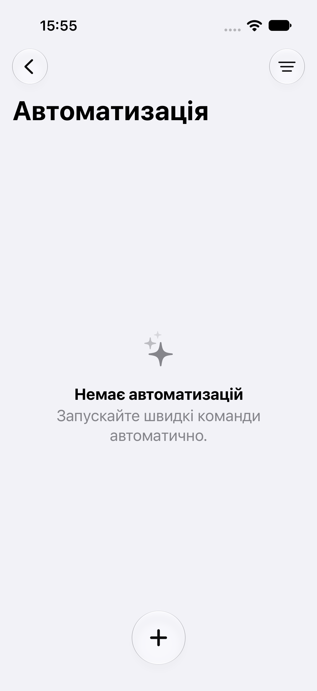
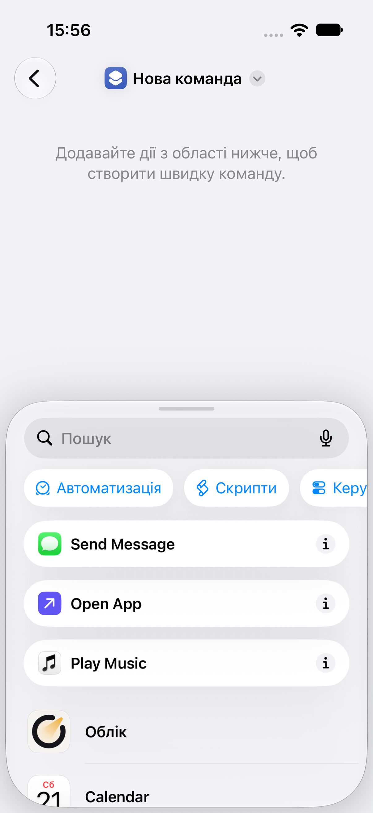
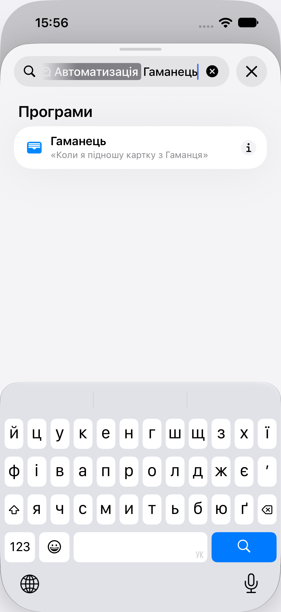
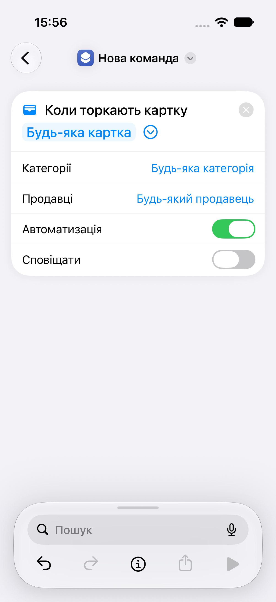
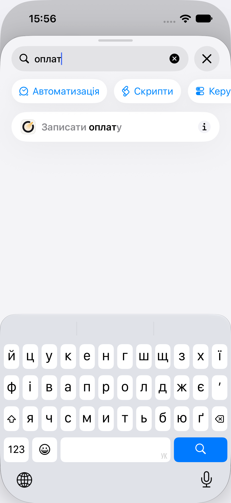
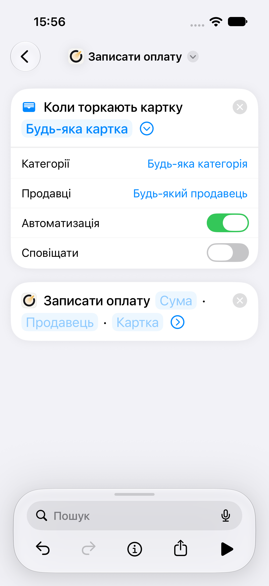
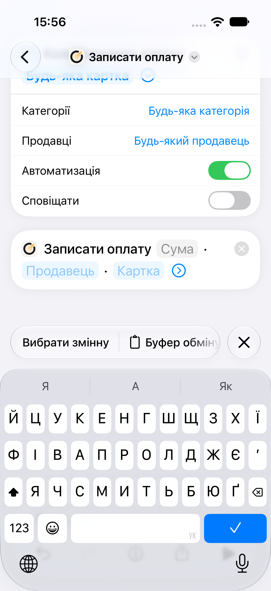
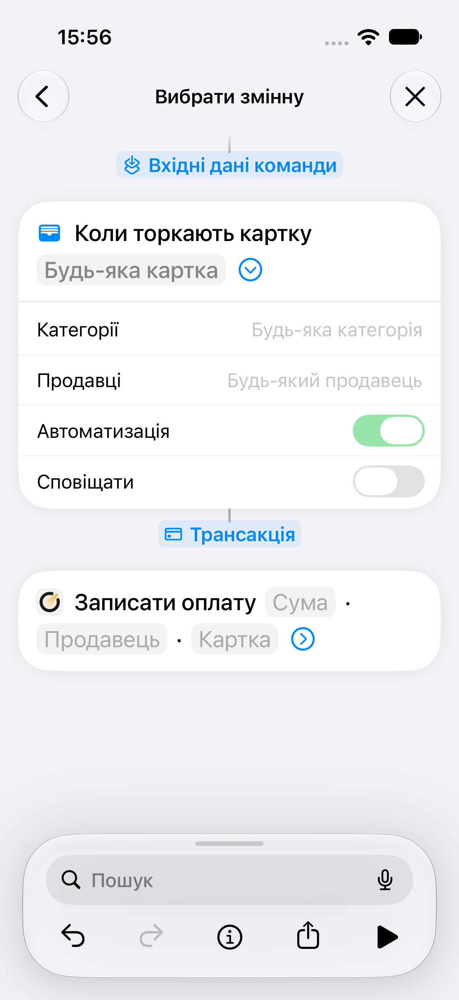
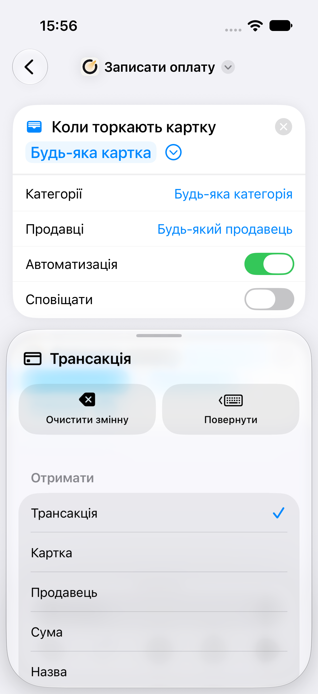
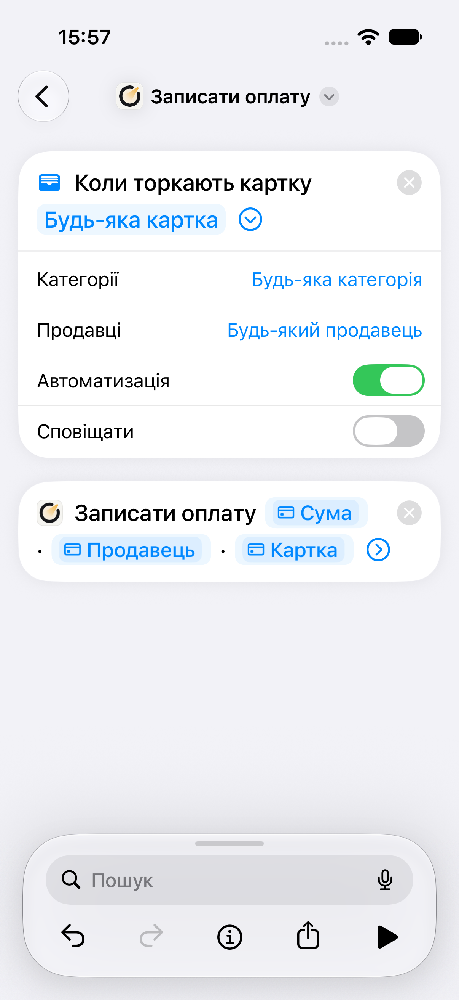

Оплати Apple Pay в «Обліку»
Для iOS 27, застосунок «Швидкі команди» українською. Налаштовується один раз.
iOS не дозволяє застосунку створити автоматизацію за вас, тож це робиться в «Швидких командах». Після цього кожна оплата карткою з Гаманця сама з’являється в «Обліку».
Відкрийте «Швидкі команди» і перейдіть на «Автоматизація». Торкніться кнопки «Нова команда».

У нижній панелі торкніться «Автоматизація», щоб побачити тригери.

Знайдіть «Гаманець» («Коли я підношу картку з Гаманця») і торкніться його.

Торкніться стрілки біля «Будь-яка картка». «Категорії» й «Продавці» лишіть як є, «Автоматизація» ввімкнено, «Сповіщати» вимкнено.

У пошуку внизу введіть «оплат» і оберіть дію «Записати оплату» з «Обліку».

Дія додана. Тепер заповніть її поля: «Сума», «Продавець» і «Картка».

Торкніться поля, наприклад «Сума». Над клавіатурою з’явиться «Вибрати змінну».

Оберіть «Трансакція» (це змінна з даними платежу).

Торкніться змінної «Трансакція» і в розділі «Отримати» оберіть властивість: для суми — «Сума», для продавця — «Продавець», для картки — «Картка». Потім «Повернути».

Повторіть для решти полів. Готово: після кожної оплати Apple Pay запис з’являтиметься в «Обліку».

Картки з банком, підключеним в «Обліку», теж підходять: оплата склеїться з випискою без дубля. Питання: inbox.heiko@icloud.com.